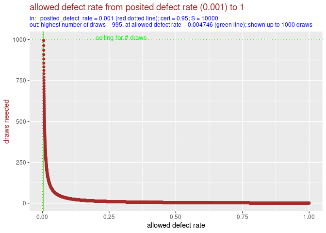
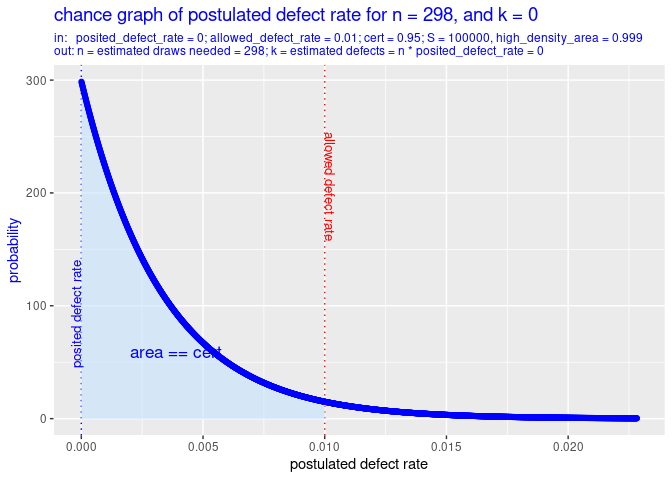
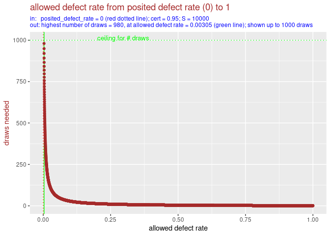

Introduction
drawsneeded is an R package for use in auditing based on statistical sampling. It helps choose the sample size. This is based on the required level of certainty and the maximum allowed defect rate.
To make this more explicit, drawsneeded is useful when:
- you want to audit the defect rate of a set of like items, and
- you consider doing this audit by means of statistical sampling on the set of items, and
- you want to establish whether or not the defect rate is below a certain threshold, and
- you want to estimate how many items (draws) you need to sample, i.e. you want to estimate the needed sample size.
Installation
You can install the development version of drawsneeded from GitHub with:
if (!requireNamespace("devtools", quietly = TRUE)) {
install.packages("devtools")
}
devtools::install_github("cfjdoedens/drawsneeded")Overview of functions
- drawsneeded() – Estimate number of samples required.
- drawsneeded_plot() – Visualize relationship between assumptions and sample size.
- plot_varying_*() – Examine sensitivity of required samples to different parameters.
- combined_plots() - Combine output of all plot functions in one picture.
Main function: drawsneeded()
The function drawsneeded(posited_defect_rate, allowed_defect_rate, cert) gives an estimate of the number of drawn items needed to establish with some certainty level, cert, that the defect rate is below a certain threshold, allowed_defect_rate. The assumption of drawsneeded() is that each drawn item exactly has posited_defect_rate. It might be that in practice the items have a defect of either 0 or 1, or, when they have a defect on a scale from 0 to 1, most items have 0 defect and most items will contain no defects at all, and some items will have a large defect, or are even totally defective. So, in practice the defect rate may have greater variance, but this assumption preserves its expected value.
Due to randomness, the actual number of needed drawn items might be smaller or bigger. Also, it might turn out, that the set has a higher defect rate than allowed_defect_rate. In that case no amount of draws will suffice to prove that the defect rate is below allowed_defect_rate.
Statistical model
drawsneeded can be used in audits of financial records or administrative decisions, where the defect rate might be binary (0 or 1) or continuous (ranging from 0 to 1).
For example:
- In a financial audit, the overall defect rate might be the proportion of funds spent improperly.
- In an administrative audit, the overall defect rate might be the proportion of decisions that violate policy.
The function drawsneeded(posited_defect_rate, allowed_defect_rate, cert) gives an estimate of the minimum number of drawn items needed to establish with some certainty, cert, e.g. 0.95, that the defect rate is below allowed_defect_rate. For this estimation it assumes that the actual defect rate in the file of items equals the posited_defect_rate. It is up to the user of drawsneeded() to choose a posited_defect_rate(). When the posited_defect_rate is chosen conservative, i.e. on the high side, it can be used with some confidence to produce a not too low number. And vice versa we can set the posited_defect_rate on the low side to get a bottom estimate of the number of items that need to be drawn and checked.
drawsneeded() assumes that each item that will be drawn has a defect of posited_defect_rate. And it computes the minimum number of drawn items necessary to establish with cert certainty that posited_defect_rate < allowed_defect_rate. Note that it might actually not be possible for any of the items in the file to have exactly that defect size.
The computation of this minimum is based on the binomial distribution. This is extended with the beta distribution to allow for non integer values of defects. (The binomial distribution assumes that there are very many items to draw from, which all have equal chance of being drawn, and there are so many items that when we have drawn some this does not change in a substantial way the rate of erroneous items.)
Note that in this scheme the statistical procedure that is used to estimate the defect rate in the file of items does not use the posited_defect_rate! The posited_defect_rate is only used as means to estimate the minimal number of items that need to be drawn to estimate the defect rate with sufficient certainty. The posited_defect_rate is used only for planning.
Note that the prior used by drawsneeded() is flat: each possible defect rate is beforehand given an equal probability.
Advanced use
Planning versus execution
The number that is produced by drawsneeded() gives an estimate of how many drawn items are needed to establish the defect rate in a set of like items. In order to have a statistical sound estimate of the defect rate, it is not necessary to stick to that planned number for actual drawing and evaluation! The number is just an indication of the effort needed.
For example, when drawsneeded() estimates that there are 365 draws needed (see the first example below), it might turn out that after 298 draws checked, not one defect was found. If the 298 items were chosen randomly, over the total set of items, it can be safely concluded that the defect rate is not more than 1 %. And there is no need to check the other 67 items.
On the other hand, when it turns out that the defect rate of the drawn and evaluated so far items is above the posited_defect_rate, one can do a new call on drawsneeded() to establish a new, and forcibly higher, number of draws that are needed. Care should be taken then that all items in the file had, and have, an equal chance of being selected.
Combination with incremental drawing
In order to minimize the number of to be drawn and to be checked items one can explicitly proceed by making an optimistic, i.e. low, guess of the posited_defect_rate, and once this indeed turns out to be too optimistic, plan anew as described above with the actual defect rate found in the already checked items.
Examples
0.1 percent defect expected
posited_defect_rate = 0.001, allowed_defect_rate = 0.01, cert = 0.95
Suppose you know from previous experience that a small defect rate might exist in the set of items. You guess the defect rate to be no more than 0.1 percent for the total set. So you set posited_defect_rate to 0.001. You need a result with 95% certainty. So you set certainty to 0.95.
drawsneeded(posited_defect_rate = 0.001, allowed_defect_rate = 0.01,
cert = 0.95)
#> [1] 365The conclusion is that you will need at least 365 samples.
In a picture this looks like:
drawsneeded_plot(posited_defect_rate = 0.001, allowed_defect_rate = 0.01, cert = 0.95)
drawsneeded_plot() has called drawsneeded() to compute the number of items that should be in the sample. This number is 365. The plot then shows the chance graph, i.e. probability density function, of the postulated defect rate given there were n = 365 items drawn, and the sum of defects of these drawn items, k = n * posited_defect_rate = n * 0.01 = 365 * 0.01 = 3.65.
We can further analyse the situation by varying over posited_defect_rate, or over allowed_defect_rate or over cert. See the following three plots.
Varying over the posited defect rate
First we vary over the posited defect rate:
plot_varying_posited_defect_rate(allowed_defect_rate = 0.01,
cert = 0.95, max_n = 1000)
We see that as posited_defect_rate goes near to allowed_defect_rate, the number of draws needed rises. In this graph only the results up to 1000 draws are shown. This limit can be made higher, thereby we zoom out to 100 times larger scale for the y-axis (the number of draws needed).
plot_varying_posited_defect_rate(allowed_defect_rate = 0.01,
cert = 0.95, max_n = 100000)
As we can see, when the posited_defect_rate comes more close to the allowed_defect_rate, the number of draws needed rises more sharply. Compare this graph with the previous graph: we see that, due to a 100 times bigger scale on the y-axis, the curve looks much flatter, for the part of the posited_defect_rate from 0 to 0.0050.
We can also study the variation of posited_defect_rate in a non graphical way:
drawsneeded(posited_defect_rate = seq(from = 0.0, by = 0.001, to = 0.009),
allowed_defect_rate = 0.01, cert = 0.95)
#> 0 0.001 0.002 0.003 0.004 0.005 0.006 0.007 0.008 0.009
#> 298 365 458 594 801 1143 1767 3104 6894 27195Again we see that for a posited defect rate of 0.001, we need 365 draws. The advantage of the non graphical presentation is that we can more easily compare the different numerical values.
Varying over the allowed defect rate
plot_varying_allowed_defect_rate(posited_defect_rate = 0.001,
cert = 0.95)
We see that as the allowed_defect_rate moves away from the posited_defect_rate, the number of draws falls sharply.
Non graphically this looks like (note the 365 computed draws needed for allowed defect rate 0.01):
drawsneeded(posited_defect_rate = 0.001,
allowed_defect_rate = seq(from = 0.002, by = 0.001, to = 0.01),
cert = 0.95)
#> 0.002 0.003 0.004 0.005 0.006 0.007 0.008 0.009 0.01
#> 5757 2190 1305 920 708 574 482 415 365and,
drawsneeded(posited_defect_rate = 0.001,
allowed_defect_rate = seq(from = 0.02, by = 0.01, to = 0.1),
cert = 0.95)
#> 0.02 0.03 0.04 0.05 0.06 0.07 0.08 0.09 0.1
#> 163 104 76 60 49 42 36 32 28and,
drawsneeded(posited_defect_rate = 0.001,
allowed_defect_rate = seq(from = 0.2, by = 0.1, to = 0.9),
cert = 0.95)
#> 0.2 0.3 0.4 0.5 0.6 0.7 0.8 0.9
#> 13 8 5 4 3 2 1 1The non graphical presentation allows us to explore the variation of values more precisely, than just looking at the graph.
Varying over the certainty
Finally we can also vary over the certainty we apply.
plot_varying_cert(posited_defect_rate = 0.001,
allowed_defect_rate = 0.01)
As might be expected: if we can do with less certainty, then we need fewer draws.
In raw numbers this looks like:
drawsneeded(posited_defect_rate = 0.001, allowed_defect_rate = 0.01,
cert = seq(from = 0.50, by = 0.05, to = 0.95))
#> 0.5 0.55 0.6 0.65 0.7 0.75 0.8 0.85 0.9 0.95
#> 76 88 102 118 137 159 187 223 275 365Note that for cert 0.95, we get again 365 draws needed.
All plots bundled in one picture
We can call combined_plots() to get all four plots in one picture.
combined_plots(posited_defect_rate = 0.001, allowed_defect_rate = 0.01,
cert = 0.95)
The blue graph, i.e. the upper left, shows the chance density for values from 0 to 1 of the defect rate for the minimum combination of n and k given a posited defect rate of 0.001, allowed defect rate of 0.01, and certainty of 0.95. The brown graphs, i.e. the other, show what happens with the number of draws needed when we vary posited defect rate, allowed defect rate and certainty.
No defect expected
posited_defect_rate = 0, allowed_defect_rate = 0.01, cert = 0.95
You might expect to see no defect at all in the to be audited set of items. Then you could calculate as follows:
drawsneeded(posited_defect_rate = 0, allowed_defect_rate = 0.01,
cert = 0.95)
#> [1] 298So then 298 samples is sufficient.
In a picture this looks like:
drawsneeded_plot(posited_defect_rate = 0, allowed_defect_rate = 0.01,
cert = 0.95)
Again, we can further analyse the situation by varying over posited_defect_rate, or over allowed_defect_rate or over cert. As we have above already studied varying the posited_defect_rate, we will not repeat that here.
Varying over the allowed defect rate
plot_varying_allowed_defect_rate(posited_defect_rate = 0, cert = 0.95)
We see that as the allowed_defect_rate moves away from the posited_defect_rate, the number of draws falls sharply.
Non graphically this looks like:
drawsneeded(posited_defect_rate = 0,
allowed_defect_rate = seq(from = 0.001, by = 0.001, to = 0.01),
cert = 0.95)
#> 0.001 0.002 0.003 0.004 0.005 0.006 0.007 0.008 0.009 0.01
#> 2994 1496 997 747 597 497 426 372 331 298and,
drawsneeded(posited_defect_rate = 0,
allowed_defect_rate = seq(from = 0.02, by = 0.01, to = 0.1),
cert = 0.95)
#> 0.02 0.03 0.04 0.05 0.06 0.07 0.08 0.09 0.1
#> 148 98 73 58 48 41 35 31 28and,
drawsneeded(posited_defect_rate = 0,
allowed_defect_rate = seq(from = 0.2, by = 0.1, to = 0.9),
cert = 0.95)
#> 0.2 0.3 0.4 0.5 0.6 0.7 0.8 0.9
#> 13 8 5 4 3 2 1 1Varying over the certainty
Finally we can also vary over the certainty we apply.
plot_varying_cert(posited_defect_rate = 0, allowed_defect_rate = 0.01)
As might be expected: more certainty needs more draws.
In raw numbers this looks like:
drawsneeded(posited_defect_rate = 0, allowed_defect_rate = 0.01,
cert = seq(from = 0.50, by = 0.05, to = 0.95))
#> 0.5 0.55 0.6 0.65 0.7 0.75 0.8 0.85 0.9 0.95
#> 68 79 91 104 119 137 160 188 229 298We recognize the number 298 as the number of draws needed for cert 0.95.
All plots bundled in one picture
We call combined_plots() to get all four plots in one picture.
combined_plots(posited_defect_rate = 0, allowed_defect_rate = 0.01,
cert = 0.95)
The blue graph, i.e. the upper left one, shows the chance density for values from 0 to 1 of the defect rate for the minimum combination of n and k given a posited defect rate of 0.0, allowed defect rate of 0.01, and certainty of 0.95. The brown graphs, i.e. the other, show what happens with the number of draws needed when we vary posited defect rate, allowed defect rate and certainty.
Suggested extensions
- Add a prior to drawsneeded().
- Add a cost function that makes additional draws more expensive. The function can help with planning of incremental drawing.
- Add to this README an example table of draws needed based on variations of posited defect rate, allowed defect rate and certainty.
- Add a table function, that produces a table of draws needed based on variations of posited defect rate, allowed defect rate and certainty.
- Make the functionality of this package into a live shiny app.